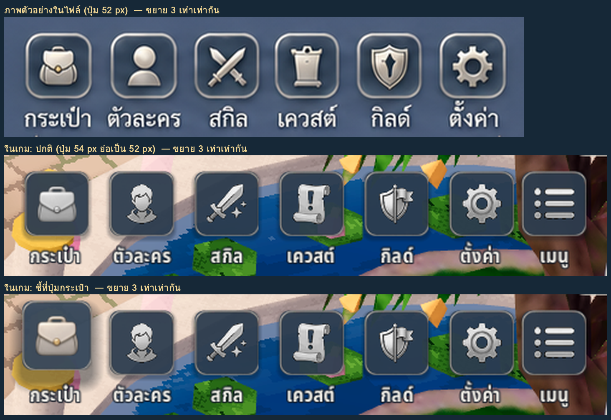
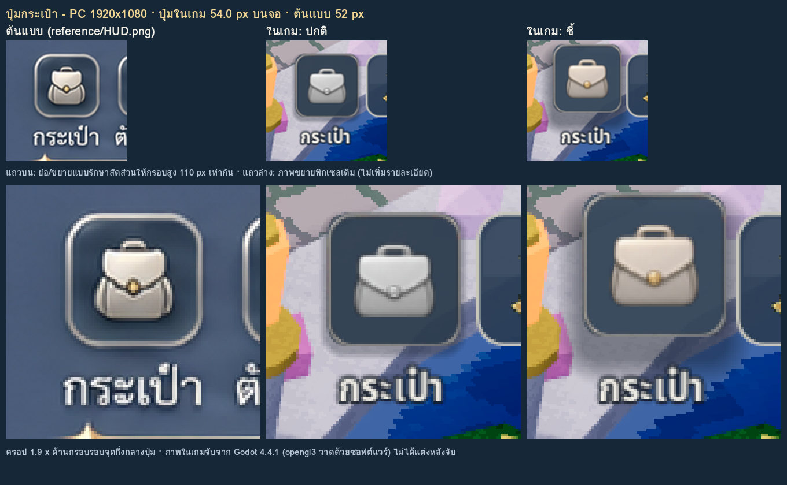
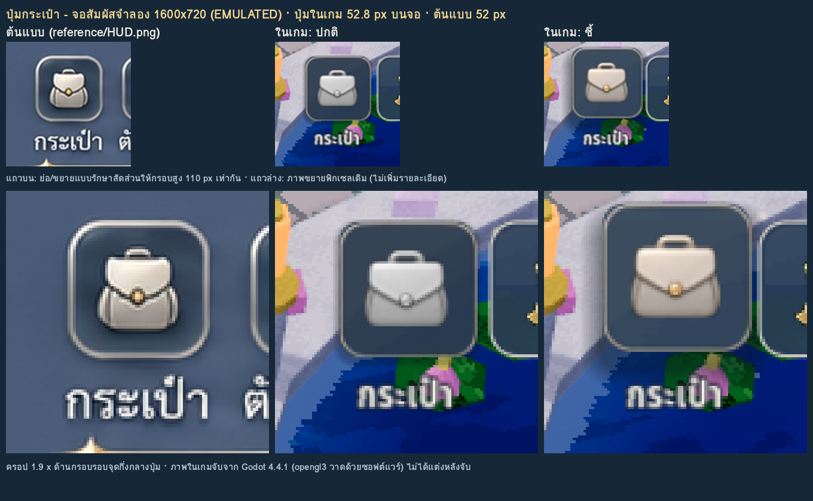
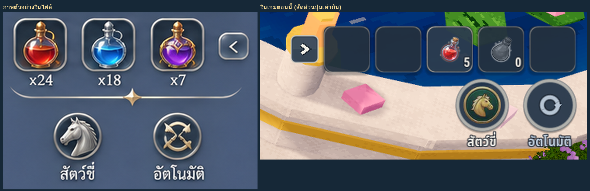
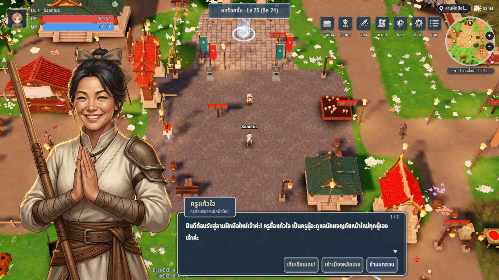
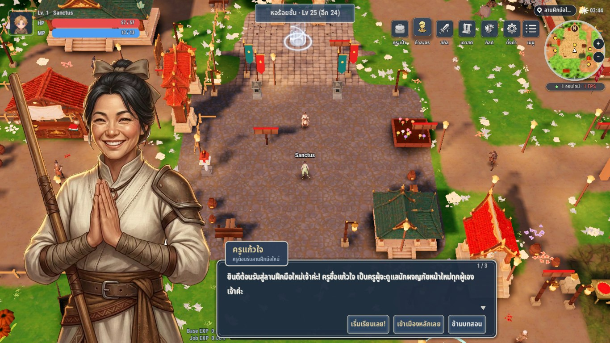

ปรับ HUD และปุ่มกระเป๋า — รอบแก้ภาพ
สถานะภาพ: CANDIDATE — ยังไม่ผ่านการตรวจของเจ้าของ (ภาพยังไม่ตรงตัวอย่าง ดูรายการจุดต่างในรายงาน)
build 2026-11-26 03:33 UTC · source 72626fdd · เปิดเกมแบบชุดใหม่ · เปิดเกมแบบเดิม
ภาพทั้งหมดจับจากเกมที่รันจริง วาดด้วยซอฟต์แวร์ในคลาวด์ (ไม่ใช่การ์ดจอจริง / ไม่ใช่มือถือจริง) ไม่ได้แต่งหลังจับ
1. แถวเมนู: ภาพตัวอย่างในไฟล์ / ในเกมปกติ / ในเกมตอนชี้ (ขนาดปุ่มเท่ากัน)

2. HUD เต็มหน้า: ภาพตัวอย่าง / ในเกม (กว้างเท่ากัน)

3. ปุ่มกระเป๋า PC 1920x1080: ต้นแบบ / ปกติ / ชี้ + ภาพขยายพิกเซลเดิม

4. ปุ่มกระเป๋า จอสัมผัสจำลอง (EMULATED)

5. ปุ่มกระเป๋าเทียบของเก่า (ถ่ายก่อนขยายกรอบไปปุ่มอื่น)

6. ช่องยา: ภาพตัวอย่าง / ในเกม

7. คลิป: เมาส์เข้า-ออกปุ่มกระเป๋า แล้วไปปุ่มข้างเคียง (ขยาย 4 เท่า; ถ่ายก่อนขยายกรอบไปปุ่มอื่น)
8. บนเว็บจริง Chromium 1366x768

9. บนเว็บจริง Chromium 1366x768 ชี้ที่ปุ่ม

10. บนเว็บจริง จอมือถือจำลอง 800x360 @4x (EMULATED)